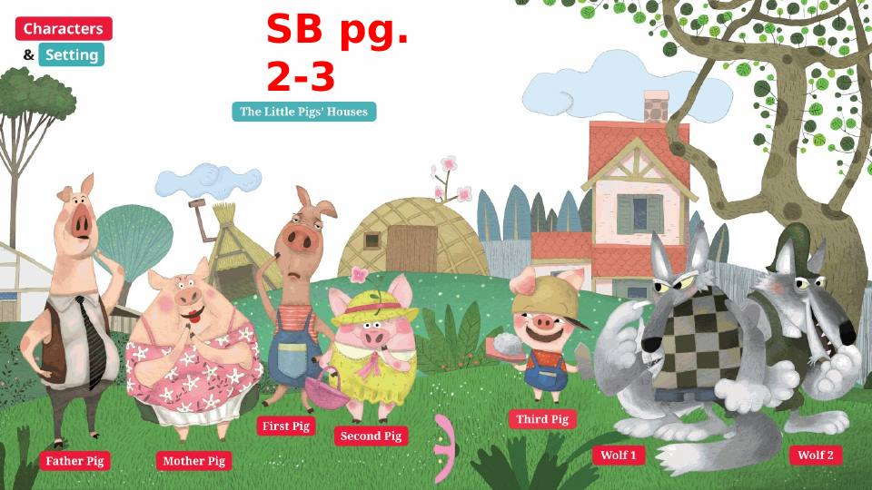
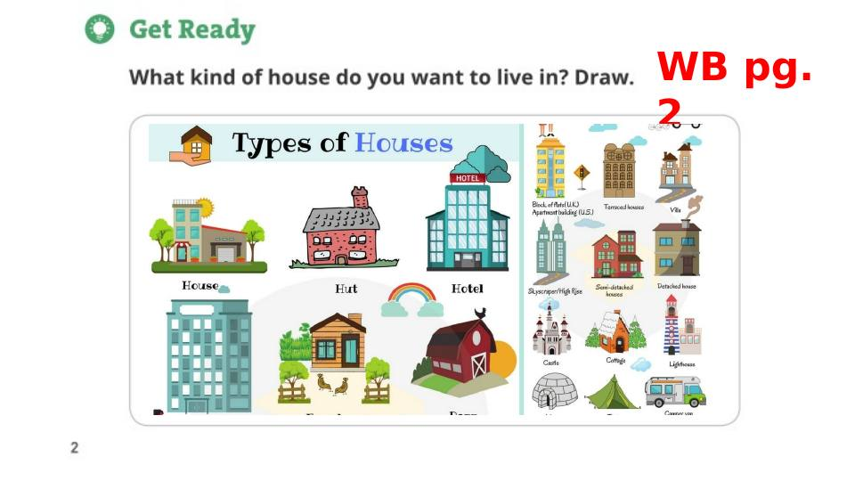
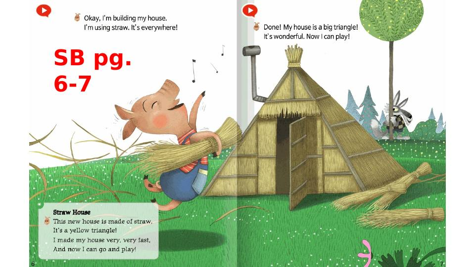
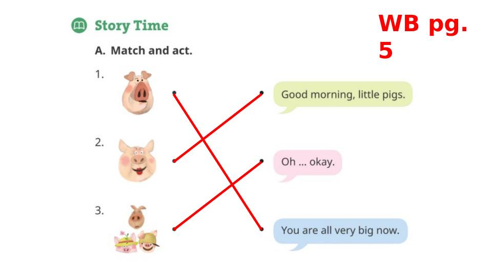
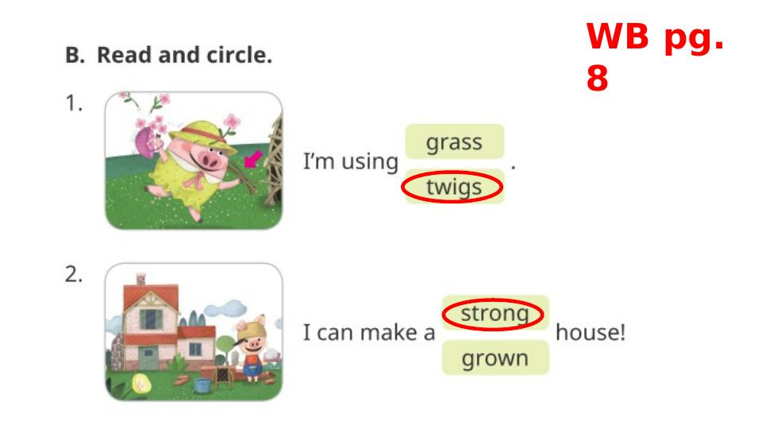
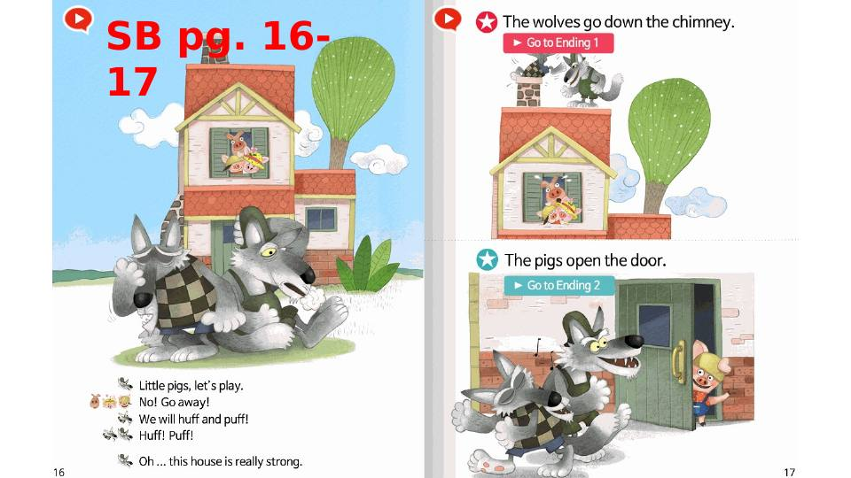
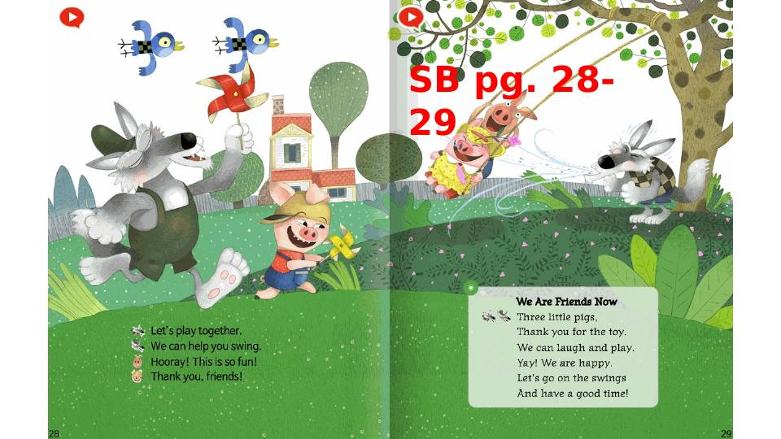
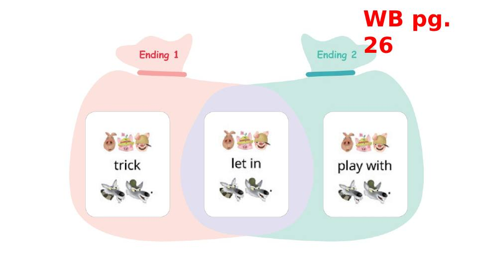
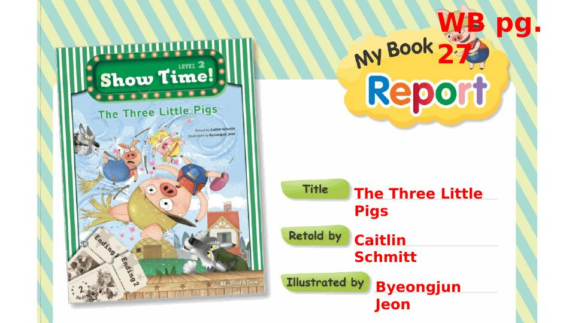
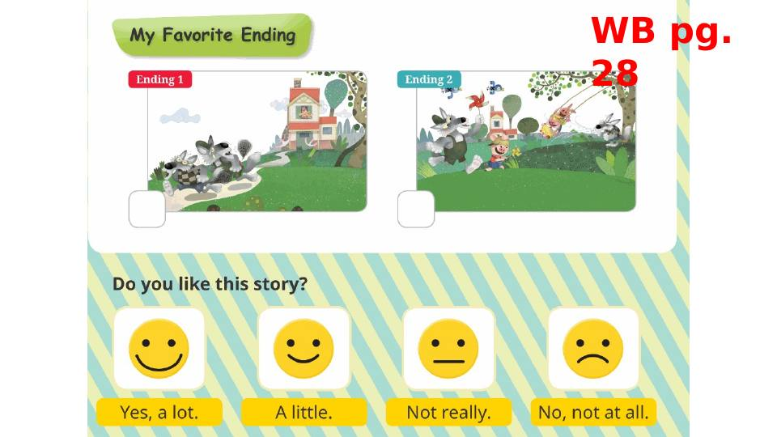

Hanyang Three Little Pigs Multimedia (selected slides)
Selected slides exported as still images from Ronald's PowerPoint lesson for his English classes at Hanyang University Elementary School. The presentation plays its animation and embedded video only in PowerPoint, so stills cannot show them. The full presentation is kept in Ronald's private archive and is available to faculty on request.
The student book and workbook page images belong to their publisher and were used for classroom teaching.









